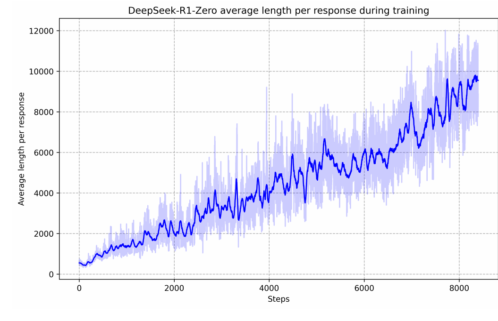
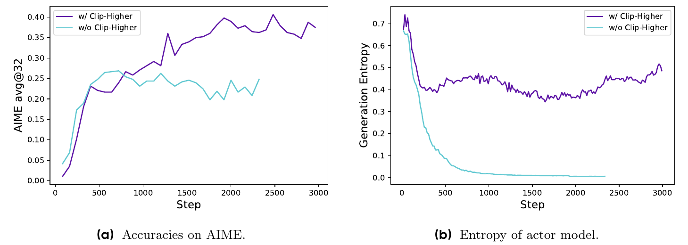
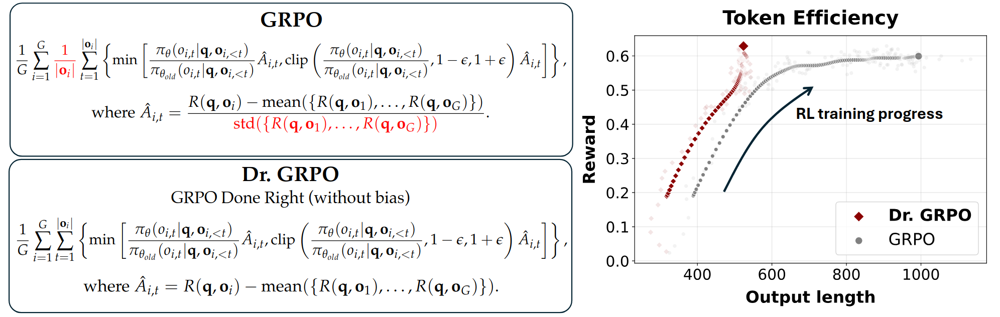
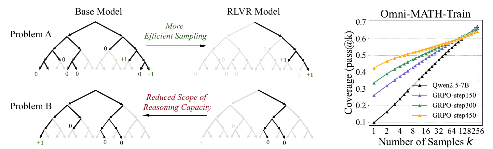
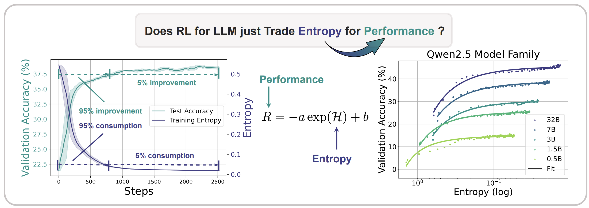

0. 这一篇讲什么
GRPO（Group Relative Policy Optimization）由 DeepSeekMath（Shao et al., 2024）提出，又在 DeepSeek-R1（DeepSeek-AI, 2025）中被用来训练长思维链的推理模型，成为 2025 年以来 LLM 强化学习中使用最广的算法。
它的出发点很直接：PPO 里的 Critic 要占一份和策略同量级的显存，训练又不稳定（尤其在 LLM 上，价值的初始化和收敛都是难题）。GRPO 干脆不要 Critic，对同一个提示词采样一组回答，用它们互相比较来估计优势。
一句话概括：不再用 Critic 预测价值，而是对同一个提示词采样多条回答，把这组回答的奖励做归一化，谁比组内平均分高，谁的优势就是正的。
这一篇的内容分两半。前一半讲算法：
- GRPO 的原始形式，以及 DeepSeek-R1 的训练流程；
- GRPO 在无 Critic 方法家族中的位置：REINFORCE、RLOO、ReMax、REINFORCE++；
- GRPO 的已知偏差，以及修正它们的变体：DAPO、Dr.GRPO、GSPO、CISPO 等。
后一半讲 GRPO 和 RLVR 引发的讨论，这部分在 2025 年非常活跃：
- RLVR 是否扩展了模型的推理能力（pass@k 之争）；
- 熵坍缩及其机制；
- 回答长度的增长；
- 奖励信号到底起了多大作用（虚假奖励、单样本 RLVR）；
- 训练和推理的不一致；
- GRPO 适合什么样的任务。
1. GRPO
1.1 三个模型
| 模型 | 作用 | 初始化 | 是否训练 |
|---|---|---|---|
| 策略模型 $\pi_\theta$ | 最终要训练的模型；每个提示词采样 $G$ 条回答 | SFT 模型（或基座模型） | 是 |
| 参考模型 $\pi_{\text{ref}}$ | 提供 KL 约束 | 同上 | 否 |
| 奖励模型 / 验证器 | 给每条回答打分 | 训练好的奖励模型，或规则 | 否 |
和 PPO 相比，没有 Critic。这是两者最本质的区别：省掉一个和策略同规模的模型，训练显存直接降一大截。
$G$ 通常取 4 到 64。名字中的"Group"就来自这里：一个提示词对应一组采样，组内的平均分本身就相当于一个"就地估计"出来的 baseline，起到了价值函数的作用。
在 RLVR 中，奖励模型常常直接被规则代替（数学题比对答案、代码运行测试），这时只剩下两个模型。这也是 GRPO 在数学和代码推理中流行的原因之一。
1.2 第一步：组内归一化，构造优势
对同一个提示词 $q$ 采样 $G$ 条回答 $\{o_1, \dots, o_G\}$，每条回答得到一个奖励 $r_i$。GRPO 直接对这组奖励做归一化：
$$ \hat A_i = \frac{r_i - \mathrm{mean}(\{r_1, \dots, r_G\})}{\mathrm{std}(\{r_1, \dots, r_G\})}. $$
- 这一步替代了 PPO 中 Critic 加 GAE 所做的事。组内均值相当于 baseline（对应 PPO 中的 $V(s_t)$），减去它降低方差；除以标准差是做尺度归一化，让不同提示词的奖励量纲一致。
- 同一条回答中的所有 token 共享同一个 $\hat A_i$。 PPO 中每个 token 有自己的优势；原始 GRPO 的优势是序列级的，只是在计算损失时展开到每个 token 上。
- 如果组内回答全对或全错，所有 $r_i$ 相同，分子为 0，这组数据没有任何梯度。如果组内只有一条和其他不同，标准差很小，那一条的优势会被放大到很大。这两点是 GRPO 已知的问题，第 3 节的变体都在处理它们。
1.3 第二步：KL 直接写进损失
PPO 把 KL 作为逐 token 的惩罚混进奖励里，再交给 GAE 处理。GRPO 换了一个位置：直接在损失中加一个 KL 项，与优势解耦。用的是第 1 篇第 5.3 节中的 $k_3$ 估计：
$$ \mathbb{D}_{\text{KL}}[\pi_\theta \Vert \pi_{\text{ref}}] = \frac{\pi_{\text{ref}}(o_{i,t} \mid q, o_{i,<t})}{\pi_\theta(o_{i,t} \mid q, o_{i,<t})} - \log \frac{\pi_{\text{ref}}(o_{i,t} \mid q, o_{i,<t})}{\pi_\theta(o_{i,t} \mid q, o_{i,<t})} - 1. $$
- 好处：KL 不再和奖励混在一起，数值上更干净，也不需要 Critic 去消化这部分信号。$k_3$ 总是非负，数值稳定。
- 第 1 篇第 5.4 节说明过，把 $k_3$ 放进损失直接求导，得到的实际上是正向 KL 的梯度，而不是推导中想要的反向 KL。在策略接近参考模型时差别不大。
- 在长思维链的 RLVR 中，KL 项常常被直接去掉（第 3.1 节）。
1.4 第三步：裁剪加组内优势，拼出损失
结构和 PPO 的裁剪目标几乎一样，只是把 $\hat A_t$ 换成了组内算出的 $\hat A_i$：
$$ \mathcal{J}_{\text{GRPO}}(\theta) = \mathbb{E}\Bigg[ \frac{1}{G} \sum_{i=1}^{G} \frac{1}{|o_i|} \sum_{t=1}^{|o_i|} \Big( \min\big( \rho_{i,t} \hat A_i,\; \mathrm{clip}(\rho_{i,t}, 1-\epsilon, 1+\epsilon) \hat A_i \big) - \beta\, \mathbb{D}_{\text{KL}}[\pi_\theta \Vert \pi_{\text{ref}}] \Big) \Bigg], $$
其中 $\rho_{i,t} = \frac{\pi_\theta(o_{i,t} \mid q, o_{i,<t})}{\pi_{\theta_{\text{old}}}(o_{i,t} \mid q, o_{i,<t})}$。
- 只有一个损失，没有价值损失，因为没有 Critic 需要训练。
- 注意 $\frac{1}{|o_i|}$：先在每条回答内部按长度求平均，再在组内求平均。这是原始 GRPO 的写法，DAPO 和 Dr.GRPO 都专门指出了它的问题（第 3 节）。
1.5 和 PPO 的对比
| PPO | GRPO | |
|---|---|---|
| 模型数量 | 4（策略、参考、奖励、Critic） | 3（策略、参考、奖励），奖励可用规则代替 |
| 优势的来源 | Critic 预测价值 + GAE | 组内奖励归一化 |
| 优势的粒度 | token 级 | 回答级（组内共享） |
| KL 的处理 | 混入逐 token 的奖励 | 直接加入损失 |
| 显存与训练成本 | 高（多一个同规模的 Critic） | 低 |
| 采样开销 | 每个提示词一条 | 每个提示词 $G$ 条 |
GRPO 能省掉 Critic，是因为 Critic 存在的主要目的是给出一个降低方差的 baseline，而"同一个提示词下这组回答的平均奖励"就是"在这个提示词下，策略平均能拿多少分"的一个蒙特卡洛估计。它不需要单独训练一个网络，代价是每个提示词都要采样多条回答：开销从"训练一个 Critic"转移到了"多花几倍的采样"。
GRPO 和 PPO 一样，严格来说是 on-policy 的，同样依赖重要性采样加裁剪来复用一批数据。它和 DPO 的成本差距主要来自在线采样，这一点和 PPO 是一样的。
1.6 对奖励的要求
PPO 的奖励模型输出绝对分数就够了，Critic 会把绝对分数转成相对的优势。GRPO 没有 Critic，完全依赖组内的相对比较，所以对奖励的要求变成了"同一个提示词下不同回答的分数要有区分度"。
这正是 GRPO 特别适合数学、代码这类有明确对错、可以用规则直接打分的任务的原因：规则奖励干净、区分度高，不需要训练一个容易被钻空子的奖励模型。同时也意味着，题目的难度要合适：太简单（全对）或太难（全错）的题都没有信号。
1.7 DeepSeekMath 中的两个细节
DeepSeekMath 的论文除了提出 GRPO，还有两个经常被忽略的内容。
过程监督版本. 论文也给出了用过程奖励模型的 GRPO：对每一步的奖励在组内做归一化，每个 token 的优势取它之后所有步骤归一化奖励之和。这样就有了步骤级的信用分配。
一个统一的视角. 论文把 SFT、拒绝采样微调（RFT）、DPO、PPO 和 GRPO 写成同一个梯度形式：
$$ \nabla_\theta \mathcal{J} = \mathbb{E}_{(q, o) \sim \mathcal{D}}\Big[ \frac{1}{|o|} \sum_t \mathrm{GC}(q, o, t)\, \nabla_\theta \log \pi_\theta(o_t \mid q, o_{<t}) \Big], $$
不同的方法只是在三个方面不同：数据来源（固定数据集还是当前策略在线采样）、奖励函数（规则还是模型）、以及梯度系数 $\mathrm{GC}$（SFT 中恒为 1，RFT 中对正确答案为 1，GRPO 中为组内归一化的优势）。这和第 1 篇第 3.1 节"REINFORCE 是加权的 SFT"的视角是一致的。
论文还报告了一个后来引起大量讨论的观察：RL 提升了多数投票（Maj@K）的成绩，但没有提升 Pass@K。作者的解释是，RL 让输出分布更稳健，把正确答案从 Top-K 中"提上来"，而不是提升了模型的基础能力。这正是第 4 节 pass@k 之争的源头。
1.8 DeepSeek-R1 的流程
DeepSeek-R1 让 GRPO 广为人知。它包括两个模型：
DeepSeek-R1-Zero：直接在基座模型 DeepSeek-V3-Base 上做 GRPO，不经过任何 SFT。奖励只有两种规则：答案是否正确的准确性奖励，以及思考过程是否放在指定标签中的格式奖励。没有使用神经网络奖励模型，理由是它在大规模 RL 中容易被钻空子，重新训练又会让流程变复杂。
训练中，模型的 AIME 2024 准确率从 15.6% 提高到 71.0%（第 1 篇图 2），回答长度从几百个 token 增长到上万个 token：

论文报告，模型自发地出现了反思、验证、尝试其他解法等行为，作者称之为"顿悟时刻"（aha moment）。但 R1-Zero 也有明显的缺点：可读性差，会中英文混杂。
DeepSeek-R1：为了解决这些问题，采用了四个阶段：
- 冷启动：收集数千条长思维链数据，对基座模型做 SFT，让输出可读。
- 面向推理的 RL：和 R1-Zero 一样做 GRPO，另外加入一个语言一致性奖励（思维链中目标语言词汇的比例），减少语言混杂。
- 拒绝采样和 SFT：用上一阶段的模型生成回答，筛选出约 60 万条推理数据，加上约 20 万条写作、问答等非推理数据，共约 80 万条，重新从基座模型开始做 SFT。
- 面向所有场景的 RL：推理任务用规则奖励，通用任务用奖励模型，同时优化有用性和无害性。
论文还报告了两个对后来的讨论影响很大的结论：
- 蒸馏比小模型自己做 RL 更有效. 用上述 80 万条数据蒸馏得到的 DeepSeek-R1-Distill-Qwen-32B 在 AIME 2024 上达到 72.6%，明显好于直接在 Qwen-32B 上做大规模 RL 的结果。
- 不成功的尝试. 过程奖励模型（难以定义步骤，自动标注不准，容易被钻空子）和蒙特卡洛树搜索（token 级的搜索空间太大，价值模型难以训练）都没有取得成功。
2. 无 Critic 方法的家族
GRPO 并不是第一个去掉 Critic 的方法。把它放到 REINFORCE 家族中看，会更清楚它的每个设计在做什么。
2.1 几种 baseline
所有这些方法的梯度都是 $\sum_i (r_i - b_i) \nabla \log \pi_\theta(o_i)$ 的形式（可能再加上裁剪和归一化），区别只在 baseline $b_i$：
| 方法 | baseline | 说明 |
|---|---|---|
| REINFORCE | 常数，或奖励的滑动平均 | 最简单 |
| ReMax（Li et al., 2023） | 贪心解码得到的回答的奖励 | 每个提示词多一次贪心生成 |
| RLOO（Ahmadian et al., 2024） | 同组中除自己以外的其他回答的平均奖励 | 无偏 |
| GRPO | 同组所有回答（包括自己）的平均奖励，再除以标准差 | 有偏 |
| REINFORCE++（Hu, 2025） | 在整个 batch 上归一化，而不是在组内 | 不需要每个提示词采多条 |
RLOO 为什么是无偏的. 第 1 篇第 3.3 节说明，baseline 只要不依赖于采样的动作，就不改变梯度的期望。RLOO 的 baseline 只用了其他回答的奖励，和当前回答的采样相互独立，所以是无偏的。GRPO 的组内均值包含了当前回答自己的奖励，严格来说是有偏的。
不过两者的差别只是一个常数倍：
$$ r_i - \frac{1}{G}\sum_j r_j = \frac{G-1}{G}\Big( r_i - \frac{1}{G-1}\sum_{j \ne i} r_j \Big). $$
所以"GRPO 的均值版本"就是 RLOO 乘以 $\frac{G-1}{G}$，相当于把学习率缩小了一点，方向完全相同。真正改变优化行为的是除以标准差这一步。
REINFORCE++ 的观察是：在组内做归一化，对每个提示词都要采样多条；而且组内的标准差在小组中很不稳定。它改为在整个 batch 上归一化优势，同时把 KL 作为逐 token 的惩罚放回奖励中（PPO 的做法）。这样每个提示词可以只采样一条，也避免了组内标准差带来的偏差。
2.2 代码：不同 baseline 下的优势
import numpy as np
def grpo_adv(r, eps=1e-6):
return (r - r.mean()) / (r.std() + eps)
def rloo_adv(r):
G = len(r)
return r - (r.sum() - r) / (G - 1) # 减去“除自己以外”的平均
def drgrpo_adv(r):
return r - r.mean() # 不除标准差
groups = {
"8 条中对 4 条": np.array([1, 1, 1, 1, 0, 0, 0, 0], float),
"16 条中只对 1 条": np.array([1] + [0] * 15, float),
"16 条中错 1 条": np.array([0] + [1] * 15, float),
"8 条全对": np.ones(8),
}
for name, r in groups.items():
a, b, c = grpo_adv(r), rloo_adv(r), drgrpo_adv(r)
print(f"{name:10s} 正确回答的优势: GRPO {a[r == 1].max() if (r == 1).any() else 0:6.2f}"
f" RLOO {b[r == 1].max() if (r == 1).any() else 0:5.2f}"
f" Dr.GRPO {c[r == 1].max() if (r == 1).any() else 0:5.2f}"
f" | 错误回答: GRPO {a[r == 0].min() if (r == 0).any() else 0:6.2f}"
f" Dr.GRPO {c[r == 0].min() if (r == 0).any() else 0:5.2f}")
# RLOO 与 GRPO 的均值版本只差一个常数倍：r_i − mean = (G−1)/G · (r_i − mean_{−i})
r = np.random.default_rng(0).random(8)
print("比例检查:", np.allclose(drgrpo_adv(r), (len(r) - 1) / len(r) * rloo_adv(r)))
输出：
8 条中对 4 条 正确回答的优势: GRPO 1.00 RLOO 0.57 Dr.GRPO 0.50 | 错误回答: GRPO -1.00 Dr.GRPO -0.50
16 条中只对 1 条 正确回答的优势: GRPO 3.87 RLOO 1.00 Dr.GRPO 0.94 | 错误回答: GRPO -0.26 Dr.GRPO -0.06
16 条中错 1 条 正确回答的优势: GRPO 0.26 RLOO 0.07 Dr.GRPO 0.06 | 错误回答: GRPO -3.87 Dr.GRPO -0.94
8 条全对 正确回答的优势: GRPO 0.00 RLOO 0.00 Dr.GRPO 0.00 | 错误回答: GRPO 0.00 Dr.GRPO 0.00
几点观察：
- 全对的组，所有方法的优势都是 0，这组数据被浪费了。
- 16 条中只对 1 条时，GRPO 给那条正确回答的优势是 3.87，是"对一半"时的近 4 倍。除以标准差会放大组内方差小的提示词（太难或太简单的题）的权重。这可能是好事（难题上偶然做对的那一次很宝贵），也可能是坏事（简单题上偶然出错的那一次被重罚，而那次出错可能只是随机噪声）。
- 不除标准差时（Dr.GRPO），优势的大小直接反映"这道题的正确率离 0.5 有多远"，不同难度的题目权重更均衡。
3. GRPO 的已知问题与变体
3.1 DAPO：长思维链下的效率与稳定性
DAPO（Yu et al., 2025）在 Qwen2.5-32B 基座模型上复现大规模 RLVR 时，发现原始 GRPO 只能达到 AIME 2024 的 30 分，远低于 DeepSeek 报告的 R1-Zero-Qwen-32B 的 47 分。他们找到了四个问题，逐一修复：
一、熵坍缩：Clip-Higher. 模型很快对某些 token 变得过度自信，生成的熵迅速下降，探索停滞。原因在于对称的裁剪：上界 $1+\epsilon$ 对低概率 token 限制很大。$\epsilon = 0.2$ 时，一个概率为 0.01 的 token 一次最多只能提高到 0.012，而一个概率为 0.9 的 token 可以提高到 1.08（实际上会被概率上限 1 截住）。所以高概率的 token 越来越高，低概率的好 token 很难被提上来。DAPO 把裁剪的上下界拆开，$\epsilon_{\text{low}} = 0.2$，$\epsilon_{\text{high}} = 0.28$，给"提高低概率的好 token"留出更多空间。

二、样本浪费：动态采样（Dynamic Sampling）. 组内全对或全错时，标准差为 0，优势全为 0，这组数据没有梯度。随着训练进行，全对的题越来越多，一个 batch 中有效的样本越来越少，梯度的方差变大。DAPO 在采样时过滤掉全对和全错的组，不断补充采样，直到 batch 被有效的组填满。
三、长度偏差：token 级的损失. 原始 GRPO 先在每条回答内按长度求平均，再在组内平均。这样每条回答的总权重相同，长回答中每个 token 的权重被稀释。长回答中的好模式学得慢，坏模式（重复、胡言乱语）也惩罚得少。DAPO 改为在整个 batch 的所有 token 上直接求平均：
$$ \mathcal{J}_{\text{DAPO}} = \mathbb{E}\Bigg[ \frac{1}{\sum_{i=1}^{G} |o_i|} \sum_{i=1}^{G} \sum_{t=1}^{|o_i|} \min\big( \rho_{i,t} \hat A_i,\; \mathrm{clip}(\rho_{i,t}, 1-\epsilon_{\text{low}}, 1+\epsilon_{\text{high}}) \hat A_i \big) \Bigg]. $$
四、截断带来的奖励噪声：超长奖励塑形（Overlong Reward Shaping）. 超过最大长度被截断的回答，通常会被判为错误。但一个推理过程可能是对的，只是太长了。把它当作错误来惩罚，会给模型带来噪声。DAPO 先尝试了直接把截断样本的损失掩掉（Overlong Filtering），又提出了一个软惩罚：设定期望的最大长度 $L_{\max}$ 和一个缓冲区 $L_{\text{cache}}$，长度在 $L_{\max} - L_{\text{cache}}$ 以内不惩罚，在缓冲区内惩罚随长度线性增加，超过 $L_{\max}$ 时惩罚为 $-1$。论文的设置是期望最大长度 16384 个 token，缓冲区 4096 个 token。
此外，DAPO 去掉了 KL 项。理由是训练长思维链模型时，模型的分布本来就需要显著地偏离初始模型。
DAPO 的消融实验给出了每项技术的贡献（AIME 2024 avg@32）：原始 GRPO 30 分，加 Overlong Filtering 36 分，加 Clip-Higher 38 分，加软超长惩罚 41 分，加 token 级损失 42 分，加动态采样 50 分。最终用 R1-Zero-Qwen-32B 一半的训练步数超过了它的 47 分。
3.2 Dr.GRPO：去掉两处归一化
Dr.GRPO（GRPO Done Right，Liu et al., 2025）指出，GRPO 的优势归一化和损失中的长度平均，共同引入了两个系统性的偏差：

长度偏差. 先看 $\frac{1}{|o_i|}$ 对错误回答的影响。对于优势为负的回答，回答越长，每个 token 分到的惩罚越小。所以模型被惩罚时，"写得更长"可以减轻惩罚。对于优势为正的回答，则是越短的回答每个 token 得到的奖励越大。综合起来，模型会倾向于正确的回答越来越短、错误的回答越来越长。论文认为，R1-Zero 类训练中观察到的"回答长度持续增长"，有一部分是这个偏差造成的，而不完全是模型学会了更深入的思考。
难度偏差. 除以组内标准差，会让组内方差小的提示词（太简单或太难的题）得到更大的权重（第 2.2 节的代码）。
Dr.GRPO 直接去掉这两处归一化：优势只减去组内均值，损失用一个固定的常数（比如最大生成长度）代替 $|o_i|$ 做归一化。这和 RLOO 等无偏的方法是一致的。
这篇论文的另一个贡献是分析了 R1-Zero 类训练中基座模型的作用：他们发现 Qwen2.5 的基座模型在不做任何训练时，就已经有相当强的推理能力，甚至会出现自我反思的行为；不同的提示词模板对结果影响很大。这提醒我们，R1-Zero 类训练中出现的"顿悟"，有一部分可能是基座模型原本就有的能力被激发了出来。
3.3 GSPO：把重要性比率改到序列级
GSPO（Group Sequence Policy Optimization，Zheng et al., 2025）指出了 GRPO 的一个粒度不匹配：优势是序列级的（整条回答共享），重要性比率却是 token 级的。
重要性采样的原理是用多个样本对分布做修正。但 GRPO 中，每个 token 位置只有一个样本，token 级的比率 $\rho_{i,t}$ 并不能有效地修正分布的差异，反而在梯度中引入了高方差的噪声。这些噪声随回答长度累积，又会被裁剪机制放大。作者认为，这是大模型、长回答训练中出现不可恢复的崩溃的原因之一，在 MoE 模型上尤其严重。
GSPO 把比率也改成序列级的，用整条回答的似然比，并按长度做几何平均（否则长回答的比率会极端地大或小）：
$$ s_i(\theta) = \Big( \frac{\pi_\theta(o_i \mid q)}{\pi_{\theta_{\text{old}}}(o_i \mid q)} \Big)^{\frac{1}{|o_i|}} = \exp\Big( \frac{1}{|o_i|} \sum_{t=1}^{|o_i|} \log \frac{\pi_\theta(o_{i,t} \mid q, o_{i,<t})}{\pi_{\theta_{\text{old}}}(o_{i,t} \mid q, o_{i,<t})} \Big), $$
然后在序列级做裁剪和优化：
$$ \mathcal{J}_{\text{GSPO}} = \mathbb{E}\Big[ \frac{1}{G} \sum_{i=1}^{G} \min\big( s_i(\theta) \hat A_i,\; \mathrm{clip}(s_i(\theta), 1-\epsilon, 1+\epsilon) \hat A_i \big) \Big]. $$
这样裁剪和更新的粒度重新和奖励对齐：整条回答要么被裁剪，要么不被裁剪。由于 $s_i$ 是几何平均，它的变化范围很小，GSPO 使用的裁剪范围比 GRPO 小得多（在 $10^{-4}$ 的量级）。
GSPO 的一个重要的工程收益和 MoE 有关。MoE 模型中，每次更新后，同一个 token 被路由到的专家可能会变化。对 token 级的比率来说，新旧策略用了不同的专家，$\rho_{i,t}$ 会剧烈波动。GRPO 训练 MoE 时需要额外的"路由回放"（routing replay）：计算新策略的概率时，强制使用旧策略选中的专家。序列级的比率对单个 token 的波动不敏感，GSPO 报告不再需要路由回放就能稳定训练 MoE 模型。Qwen 团队报告把 GSPO 用于 Qwen3 系列模型的 RL 训练（具体是哪些模型以其技术报告为准）。
代价是：单条回答内部不再有 token 级别的差异化调整。GSPO 还给出了一个 token 级的变体（GSPO-token），允许为每个 token 设置不同的优势，同时保留序列级的比率。
3.4 其他常见的修改
LitePPO. Liu et al.（2025，"Tricks or Traps"）系统地比较了 GRPO 类方法中各种技巧的效果，发现很多技巧的作用依赖于具体的模型和数据。他们提出了一个只用两项技巧的简化方法：组内减均值、在整个 batch 上除标准差（既保留组内的相对比较，又用更稳定的全局尺度控制梯度，避免组内标准差很小时优势被异常放大），加上 token 级的损失平均。
CISPO. MiniMax-M1（MiniMax, 2025）提出 CISPO：不裁剪 token 的更新（即不把超出范围的 token 的梯度置零），而是裁剪重要性权重本身，并对权重停止梯度。这样所有 token 都能贡献梯度。他们的动机是，被 PPO/GRPO 的裁剪丢掉的，往往是一些概率低但对推理很关键的 token（比如"However""Wait"这类引出反思的词）。
常见的"GRPO+"技巧. 不同的工作对 GRPO 做了很多类似的工程修改，叫法不完全一致：
- 去掉 KL 惩罚：在纯规则奖励、长链推理的任务中，KL 约束反而限制模型探索更长、更好的推理路径。
- 去掉熵奖励：熵奖励容易让模型输出乱码，很多工作改用 Clip-Higher 来维持熵。
- 提高采样温度、增大组大小 $G$：让组内比较更有区分度。
- 超长过滤：截断的回答不参与训练。
- 课程学习和难度过滤：训练前用当前模型估计每道题的通过率，去掉通过率为 0 或 1 的题；训练中定期更新。
正样本和负样本的权重. 有一种做法是只保留正样本的梯度，或者对负样本降权，理由是规则奖励下"错误"的原因五花八门，负梯度的信号噪声更大。但也有相反的证据：Zhu et al.（2025）把 RLVR 的梯度拆成"强化正确回答"和"惩罚错误回答"两部分，发现只用负样本训练，就能在大范围的 $k$ 上保持甚至提高 pass@k，而只用正样本虽然 pass@1 提升快，但多样性下降，大 $k$ 下的 pass@k 变差。他们的解释是：惩罚错误回答，会把概率重新分配给模型认为合理的其他候选，保留了多样性；强化正确回答则会让概率集中到少数路径上。所以对负样本降权，要考虑它可能带来的多样性损失。
3.5 变体一览
| 方法 | 要解决的问题 | 主要改动 |
|---|---|---|
| GRPO | PPO 的 Critic 太贵、太难训 | 组内归一化的优势，KL 放进损失 |
| RLOO | baseline 有偏 | 留一法的 baseline |
| REINFORCE++ | 组内归一化不稳定、要求多次采样 | 在 batch 上归一化，KL 放回奖励 |
| DAPO | 熵坍缩、样本浪费、长度偏差、截断噪声 | Clip-Higher、动态采样、token 级损失、超长奖励塑形，去 KL |
| Dr.GRPO | 长度和难度两个偏差 | 去掉 $\frac{1}{\lvert o_i \rvert}$ 和除以标准差 |
| GSPO | token 级比率与序列级优势不匹配，MoE 不稳定 | 序列级的重要性比率与裁剪 |
| LitePPO | 技巧太多 | 组内减均值、batch 上除标准差、token 级损失 |
| CISPO | 裁剪丢掉关键的低概率 token | 裁剪重要性权重，保留所有 token 的梯度 |
4. RLVR 到底在做什么：pass@k 之争
4.1 问题的提出
Yue et al.（2025）问了一个直接的问题：RLVR 真的让模型获得了基座模型没有的推理能力吗？ 他们用 pass@k 衡量模型的"能力边界"：对每道题采样 $k$ 次，只要有一次做对就算解出。$k$ 很大时，pass@k 反映的是模型能够解出哪些题，而不是平均表现如何。

他们在多个模型家族、多种 RL 算法（PPO、GRPO、REINFORCE++、RLOO 等）和数学、代码、视觉推理任务上得到了一致的结论：
- $k$ 小时，RLVR 模型更好；$k$ 大时，基座模型追上并超过 RLVR 模型。
- RLVR 模型生成的正确推理路径，在基座模型的分布中已经存在（基座模型对它们的困惑度很低）。
- 不同 RL 算法之间的差别很小，都离"理想"的采样效率很远。
- 蒸馏不同：从更强的模型蒸馏，可以引入基座模型中没有的新推理模式，真正扩展能力边界。
结论是：当前的 RLVR 主要是让模型更高效地采样到它本来就能找到的正确路径，代价是缩小了探索的范围。
这个观察和第 1 篇第 5.2 节的闭式解是一致的：KL 约束下的最优策略只是在参考分布上重新加权，不会给参考分布中概率为 0 的回答分配概率。DeepSeekMath 的论文中也早有类似的观察（第 1.7 节）。
4.2 反驳与补充
这个结论引发了大量的讨论。主要的反驳和补充有：
训练是否充分. Yue 等人研究的多是训练步数有限的公开模型。Liu et al.（2025，ProRL）认为，用足够长的训练时间、加上 KL 约束和定期重置参考模型等稳定训练的手段，RL 能在基座模型原本很弱的任务上扩展能力边界，大 $k$ 下的 pass@k 也能超过基座模型。他们发现，基座模型越弱的任务，RL 带来的边界扩展越明显。
pass@k 指标本身的问题. 在数学题上，$k$ 很大时，基座模型可能靠"蒙对"得到正确的最终答案，而推理过程是错的。Wen et al.（2025）提出了 CoT-pass@k：要求推理过程和最终答案都正确才算解出。用这个指标衡量，RLVR 模型在大 $k$ 下的优势仍然存在，说明 RLVR 提高了推理过程的正确性，而不只是最终答案的命中率。
多样性的损失是可以缓解的. 第 3.4 节提到，只用负样本训练可以保持大 $k$ 下的 pass@k；还有一些工作直接把 pass@k 作为训练目标，鼓励组内的多样性。这说明"缩小边界"在很大程度上是熵坍缩的结果（第 5 节），而不是 RL 本身的必然。
从产品的角度. 即使 RLVR 只是在"显化"已有的能力，把偶尔正确变成稳定正确，本身就是重要的能力提升：用户只会采样一次。
比较公允的总结是：在当前常见的训练规模下，RLVR 的主要作用是提高采样效率，同时有缩小探索范围的风险；更长时间的训练、更好的多样性保持方法，有可能突破基座模型的边界，但这仍然是一个开放的问题。 评估 RL 模型时，不能只看 pass@1，还要看大 $k$ 下的 pass@k、生成的熵和分布外的泛化。
5. 熵坍缩
5.1 现象
几乎所有的 RLVR 训练都会出现熵坍缩：策略生成的熵在训练早期迅速下降，之后性能也进入平台期（图 2 中不用 Clip-Higher 的曲线）。
Cui et al.（2025）系统地研究了这个现象：

这个经验关系意味着：当熵降到 0 时，性能达到上限 $-a + b$。性能的提升是用熵"换来的"，熵耗尽了，提升也就停止了。所以要让 RL 继续扩展，就必须控制熵的消耗速度。
5.2 机制：协方差决定熵的变化
熵为什么会下降？Cui 等人推导出：对 softmax 策略做一步策略梯度更新，熵的变化近似等于对数概率与 logit 变化量之间的负协方差：
$$ \Delta \mathcal{H} \approx -\mathrm{Cov}_{a \sim \pi}\big( \log \pi(a \mid s),\; \Delta z_a \big), $$
对普通的策略梯度，logit 的变化量 $\Delta z_a = \eta\, \pi(a)\, (A(a) - \mathbb{E}_\pi[A])$。
直觉是：如果高概率的动作恰好得到正的优势（模型"自信"的选择被证实是对的），它的概率会进一步提高，分布更加集中，熵下降；如果低概率的动作得到正的优势（模型"意外"地做对了），它的概率会提高，分布更分散，熵上升。
在 RLVR 中，前一种情况占绝大多数：模型自信的回答通常就是对的，所以协方差几乎总是正的，熵单调下降。下面的代码验证这个一阶近似：
import numpy as np
rng = np.random.default_rng(0)
def softmax(z):
e = np.exp(z - z.max()); return e / e.sum()
def entropy(p):
return -(p * np.log(p)).sum()
V, eta = 20, 1e-3
z = rng.normal(0, 2, V)
p = softmax(z)
for name, A in [("高概率 token 优势为正", np.log(p) - np.log(p).mean()),
("低概率 token 优势为正", -(np.log(p) - np.log(p).mean())),
("优势与概率无关", rng.normal(0, 1, V))]:
# 一步精确的策略梯度（对 logits）：Δz_a = η π_a (A_a − E_π[A])
dz = eta * p * (A - p @ A)
dH = entropy(softmax(z + dz)) - entropy(p)
# 一阶预测：ΔH ≈ −Cov_{a∼π}(log π(a), Δz)
logp = np.log(p)
pred = -(p @ (logp * dz) - (p @ logp) * (p @ dz))
print(f"{name:12s} 实际 ΔH = {dH:+.2e} −Cov(log π, Δz) = {pred:+.2e}")
输出：
高概率 token 优势为正 实际 ΔH = -1.18e-04 −Cov(log π, Δz) = -1.18e-04
低概率 token 优势为正 实际 ΔH = +1.18e-04 −Cov(log π, Δz) = +1.18e-04
优势与概率无关 实际 ΔH = +4.67e-05 −Cov(log π, Δz) = +4.67e-05
一阶预测和实际的熵变化完全吻合。
5.3 控制熵的方法
- Clip-Higher（DAPO）：放宽裁剪上界，让低概率的好 token 更容易被提高，正好对应"低概率动作得到正优势"的那一类更新。
- Clip-Cov 和 KL-Cov（Cui et al., 2025）：既然熵的下降来自少数协方差很大的 token，就只针对它们：Clip-Cov 把这些 token 的梯度置零，KL-Cov 对它们加一个 KL 惩罚。
- 熵奖励：直接在损失中加熵项。效果对系数非常敏感，系数稍大就会让熵爆炸、输出乱码，所以较少使用，或者只在熵低于某个阈值时才启用。
- 只在高熵 token 上训练：Wang et al.（2025）发现，在思维链中只有约 20% 的 token 是高熵的，它们往往是推理的"分岔点"（比如决定下一步怎么走的连接词）。只在这些 token 上计算策略梯度，效果和在全部 token 上训练相当，甚至更好，在大模型上提升更明显。
- 负样本训练：第 3.4 节中只用负样本训练的方法，本质上也是在维持熵。
6. 回答长度
R1-Zero 的回答长度随训练持续增长（图 1），这一度被看作模型"学会了深入思考"的标志。后来的研究给出了更细致的看法：
- 一部分是真实的能力提升. 更难的题需要更长的推理，更长的思维链允许模型尝试更多的方法、做更多的验证。
- 一部分是算法的偏差. Dr.GRPO 指出，GRPO 的长度归一化会让错误的回答越来越长（第 3.2 节）。
- 过度思考（overthinking）. 推理模型在简单的问题上也会写很长的思维链，反复验证已经得到的答案，浪费计算。
所以实际的训练中，常常需要对长度做控制：DAPO 的超长奖励塑形；在奖励中加入长度惩罚（比如 Kimi k1.5 的做法，在同一组中按长度对正确的回答给予不同的奖励）；或者训练后再做一个"长变短"的阶段，用短的正确回答对模型做蒸馏或偏好优化。
7. 奖励信号到底起了多大作用
2025 年有几项工作得到了令人意外的结果，让人重新思考 RLVR 中的奖励到底起了什么作用：
虚假奖励. Shao et al.（2025）发现，在 Qwen2.5-Math 模型上，即使用随机的奖励，甚至用错误的奖励（只奖励错误的答案）做 RLVR，MATH-500 上的成绩也能显著提高，提升幅度接近用正确奖励的结果。但在 Llama、OLMo 等其他模型家族上，这些虚假的奖励没有效果。他们的解释是：Qwen2.5-Math 在预训练中学会了"用代码辅助推理"的策略，而这个策略的正确率更高；GRPO 的裁剪机制本身带有一种偏向，即使奖励是随机的，也会让模型更多地使用它原本就偏好的策略，从而把这个更好的策略"浮现"出来。
单样本 RLVR. Wang et al.（2025）发现，只用一个训练样本做 RLVR，就能让模型在 MATH-500 上的成绩大幅提高，接近用上千个样本训练的效果。
数据污染的担忧. 也有工作指出，Qwen2.5 系列在一些数学基准上的表现可能受到了预训练数据污染的影响，在这些基准上观察到的 RL 效果需要谨慎解读，最好在污染风险更低的新数据集上验证。
这些结果共同说明：在很多设置下，RLVR 的作用主要是激发基座模型中已有的能力，而不是从奖励中学到新的知识。 基座模型本身的能力，以及它在预训练中学到的推理策略，在很大程度上决定了 RLVR 能达到的结果。这也提醒我们，在某一个模型家族上观察到的 RL 现象，不一定能推广到其他模型上；做 RL 研究时，应该在多个模型家族上验证结论。
8. 训练和推理的不一致
8.1 问题
第 1 篇第 8 节提到，RL 系统中采样用的推理引擎（如 vLLM、SGLang）和计算梯度的训练引擎（如 FSDP、Megatron）是两套不同的实现。即使权重完全相同，它们对同一个 token 算出的概率也会有细微的差别：不同的注意力内核、不同的算子融合、不同的数值精度和累加顺序，都会带来误差。
这意味着，名义上"on-policy"的训练，实际上是 off-policy 的：数据是从推理引擎的分布 $\pi_{\text{infer}}$ 中采样的，而重要性比率中的 $\pi_{\theta_{\text{old}}}$ 是训练引擎算出来的，两者并不相等。对于大多数 token，差别很小；但在一些低概率的 token 上，差别可能很大，进而产生极端的重要性比率。这被认为是大规模 RL 训练中突然崩溃的一个重要原因。
8.2 MoE 让问题更严重
在 MoE 模型中，每个 token 由路由器选择若干个专家。路由是一个离散的选择，微小的数值差别就可能让推理引擎和训练引擎选中不同的专家，概率的差别被进一步放大。而且，每次参数更新之后，同一个 token 的路由也可能改变，新旧策略的比率变得很不稳定。
8.3 应对方法
- 截断的重要性采样（TIS）：把推理引擎和训练引擎之间的差异显式地当作一个 off-policy 问题，用比率 $\frac{\pi_{\text{train}}}{\pi_{\text{infer}}}$ 对梯度做修正，并把这个比率截断在一个上限以内，防止极端值。这个方法在 2025 年由多个团队在博客和论文中提出和讨论，已被一些开源框架采用。
- 路由回放：在训练引擎中计算概率时，复用推理时选中的专家，让两边的路由一致。
- 序列级的比率：GSPO 对单个 token 的波动不敏感（第 3.3 节）。
- 提高数值精度：有工作发现，用 FP16 代替 BF16 做训练和推理（FP16 的尾数精度更高），能显著减小两边的差异，让训练更稳定。
- 双重裁剪：对优势为负、比率极大的 token 加一个下界（第 2 篇第 2.4 节）。
这个方向的进展很快，具体的做法以各框架和技术报告为准。在实践中，监控推理引擎和训练引擎在同一批数据上算出的概率之间的差异（比如两者的 KL 或最大比率），是发现这类问题的最直接的方法。
9. GRPO 适合什么样的任务
9.1 适合的任务
GRPO 最适合的任务有三个特点：奖励可以自动、可靠地计算；同一个问题的多次采样容易直接比较；单次采样的成本不太高。
| 任务 | 奖励 | 注意事项 |
|---|---|---|
| 数学推理 | 最终答案与标准答案比对 | 答案等价判断；防止只蒙对答案 |
| 代码生成 | 单元测试的通过情况 | 测试覆盖率；防止修改或绕过测试 |
| 逻辑谜题、游戏 | 规则判定 | 可以程序化地生成任意难度的题目，便于做课程学习 |
| 可验证的指令遵循 | 检查长度、格式、关键词等约束 | 约束要能程序化验证 |
| 信息抽取、分类 | 与标注比较的 F1、准确率等 | 奖励要和业务指标一致；多标签任务可以用单条样本的 F1 作奖励 |
| 搜索增强的问答 | 最终答案的准确性 | 轨迹短时适合；工具返回的 token 要掩掉 |
| 短程的工具调用 | 调用是否成功、结果是否正确 | 轨迹变长后考虑 PPO 或步骤级的方法 |
9.2 实践中的几个要点
- 题目的难度要合适. 训练前用当前模型对每道题采样若干次，估计通过率，去掉通过率为 0 和 1 的题。训练中定期重新估计。通过率在中间的题信号最强。
- 基座模型要能采到正确答案. 如果基座模型在某类题上几乎全错，GRPO 没有信号，需要先做 SFT 冷启动，或者从更简单的题开始。
- 组大小 $G$. 常用 8 到 16。$G$ 越大，优势的估计越准，越不容易出现全对或全错的组，但采样成本线性增加。
- 监控指标. 平均奖励、生成的熵、回答长度、组内全对和全错的比例、裁剪比例、推理与训练引擎概率的差异。熵快速下降、长度异常增长，是最常见的两个预警信号。
- 评估. 不要只看 pass@1，也要看大 $k$ 下的 pass@k 和分布外任务，判断 RL 是否以牺牲多样性为代价。
9.3 不太适合的任务
- 开放式任务，没有可靠的奖励：比如创意写作。用奖励模型代替规则时，GRPO 同样会遇到奖励被钻空子的问题，而且失去了"规则奖励干净"这个最大的优势。这类任务用 DPO 或 PPO 更常见。
- 长程的多轮 Agent 任务：轨迹长、采样贵、不同的轨迹难以直接比较，序列级的优势太粗（第 2 篇第 7 节）。可以考虑 PPO、步骤级分组的 GiGPO 等方法。
- 小模型，且有更强的教师模型：DeepSeek-R1 的结论是，对小模型，从强模型蒸馏通常比直接做 RL 更有效。
选择 GRPO 的核心判断是：你的任务是否像数学题一样，"哪个答案更好"可以靠程序判断，并且同一个问题的多次尝试可以放在一起比较。 如果是，GRPO 简单、省资源、效果好；如果任务的关键在于一条长轨迹中哪一步做对了、哪一步做错了，就需要更细粒度的方法。
参考文献
- Shao et al. DeepSeekMath: Pushing the Limits of Mathematical Reasoning in Open Language Models. 2024.
- DeepSeek-AI. DeepSeek-R1: Incentivizing Reasoning Capability in LLMs via Reinforcement Learning. 2025.
- Li et al. ReMax: A Simple, Effective, and Efficient Reinforcement Learning Method for Aligning Large Language Models. ICML 2024.
- Ahmadian et al. Back to Basics: Revisiting REINFORCE Style Optimization for Learning from Human Feedback in LLMs. ACL 2024.
- Hu. REINFORCE++: A Simple and Efficient Approach for Aligning Large Language Models. 2025.
- Yu et al. DAPO: An Open-Source LLM Reinforcement Learning System at Scale. 2025.
- Liu et al. Understanding R1-Zero-Like Training: A Critical Perspective. 2025.（Dr.GRPO）
- Zheng et al. Group Sequence Policy Optimization. 2025.（GSPO）
- Liu et al. Part I: Tricks or Traps? A Deep Dive into RL for LLM Reasoning. 2025.（LitePPO）
- MiniMax. MiniMax-M1: Scaling Test-Time Compute Efficiently with Lightning Attention. 2025.（CISPO）
- Kimi Team. Kimi k1.5: Scaling Reinforcement Learning with LLMs. 2025.
- Yue et al. Does Reinforcement Learning Really Incentivize Reasoning Capacity in LLMs Beyond the Base Model? 2025.
- Liu et al. ProRL: Prolonged Reinforcement Learning Expands Reasoning Boundaries in Large Language Models. 2025.
- Wen et al. Reinforcement Learning with Verifiable Rewards Implicitly Incentivizes Correct Reasoning in Base LLMs. 2025.
- Zhu et al. The Surprising Effectiveness of Negative Reinforcement in LLM Reasoning. 2025.
- Cui et al. The Entropy Mechanism of Reinforcement Learning for Reasoning Language Models. 2025.
- Wang et al. Beyond the 80/20 Rule: High-Entropy Minority Tokens Drive Effective Reinforcement Learning for LLM Reasoning. 2025.
- Shao et al. Spurious Rewards: Rethinking Training Signals in RLVR. 2025.
- Wang et al. Reinforcement Learning for Reasoning in Large Language Models with One Training Example. 2025.
- Qi et al. Defeating the Training-Inference Mismatch via FP16. 2025.